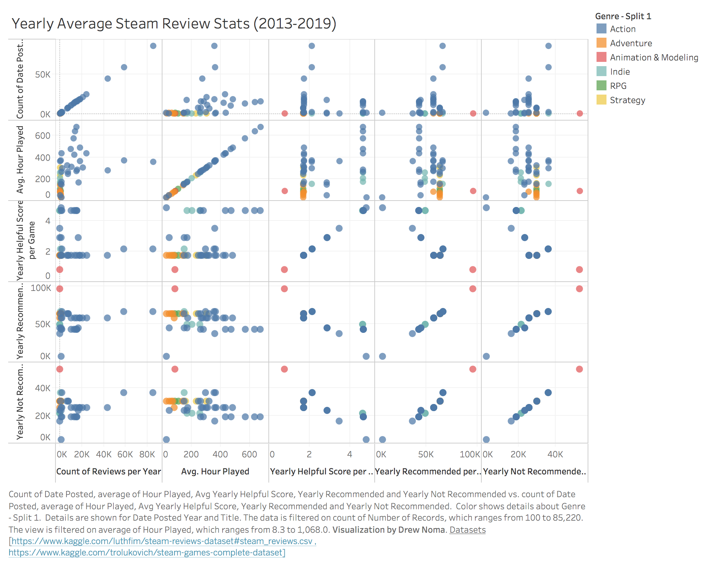

Prototype
Peer Feedback
There was either missing, incomplete, or feedback on the wrong version of the visualization for my beta. So the only real feedback I have is from the live feedback session.
The main concerns were how to wrangle the data to create a hierarchical visualization and use the scatter plot for context. So I used python scripts to combine the two datasets. One file was used for the scatter plot to give context on trends and relationships over time. The combined csv was then run through a custom python script to turn it into hierarchical json format to be used in a sunburst visualization to show the breakdown of games per genre, the games' subtypes, and review count per game.
Question
For various genres of games, how do the recommendation and helpful scores compare to the amount of hours put into the game each year. Really popular games should have a good range of reviews from helpful reviews from committed players with many hours to reviews that don't have much substance from players who played for around and hour and quit.
Answer
It doesn't seem that there is much useful information in the helpful scores as the yearly average scores are so low. This looks like it's due to how little that feature is used on most reviews.
That being said, people who do play a game for a significant amount of time tend to be the ones who leave reviews the most out of all reviewers. As there is no interactivity you can't tell, but the count of reviews posted at certain years along with the average hours played seems to show the peak playing time of certain games. Namely games like PLAYERUNKNOWN'S BATTLEGROUNDS (PUBG), Grand Theft Auto V (GTAV), MONSTER HUNTER: WORLD, Rocket League, and Rust. Having played many of these games around their peaks, it's neat seeing this correlation in my own visualization.
Many of said games are still played a lot today, just not to the degree that they once were. So it's interesting seeing these trends shift as different games pop up at different peaks.
Encoding
The visualization is encoding genre by color. Each genre has a selection of games of that genre which are also encoded in the same color as that genre.
Interactivity
Main interactivity:
- Details on demand
- Zoom
Details on demand are available when hovering over each cell. When hovering over game title cells, a more detailed message is presented. The genre, title, review score, and total review count of that game are shown in a more organized manner. To get a more detailed view of the genre or game, clicking on the cell will zoom in the cell to that specific genre/game. Clicking on the center will then zoom back out to the previous level.
Visualization based off of d3 sunburst example.
Supplemental Visualization
This scatter plot encodes genre by color
